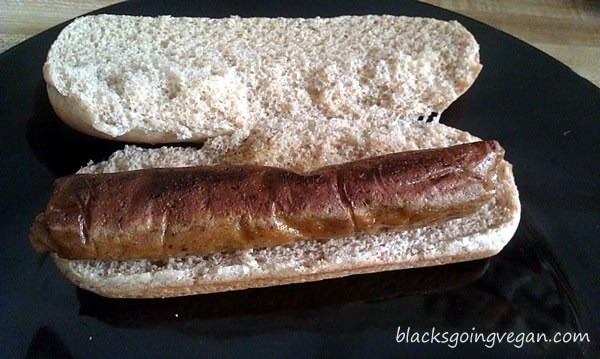

Wikipedia
Frankfurter Würstchen (German for Frankfurt sausage) is a thin parboiled sausage made of pure pork in a casing of sheep's intestine. The special taste is acquired by a special method of low temperature smoking. For consumption, Frankfurters are not cooked; they are only heated in hot water for about eight minutes which prevents the skin from bursting. They are traditionally served with bread, mustard, horseradish and/or potato salad.